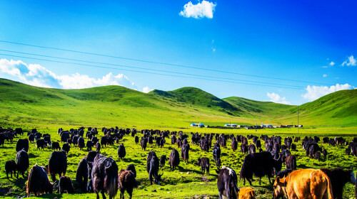
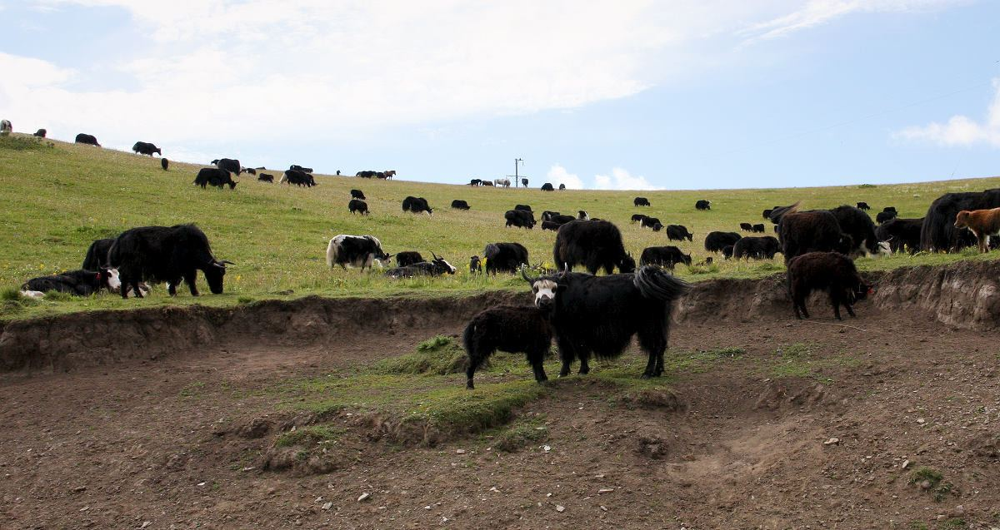
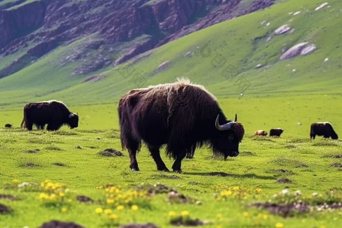
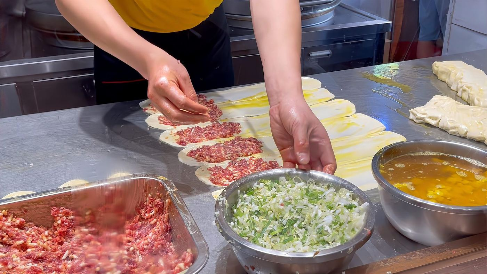
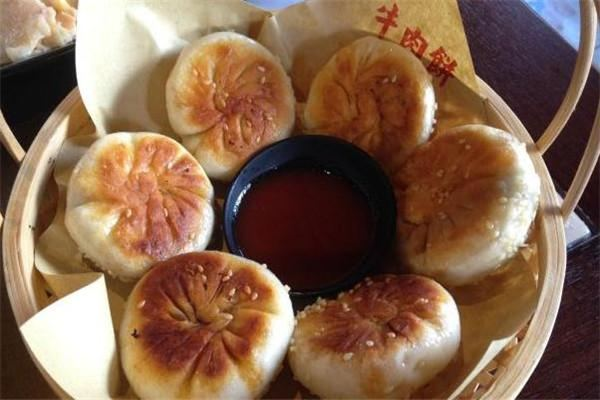
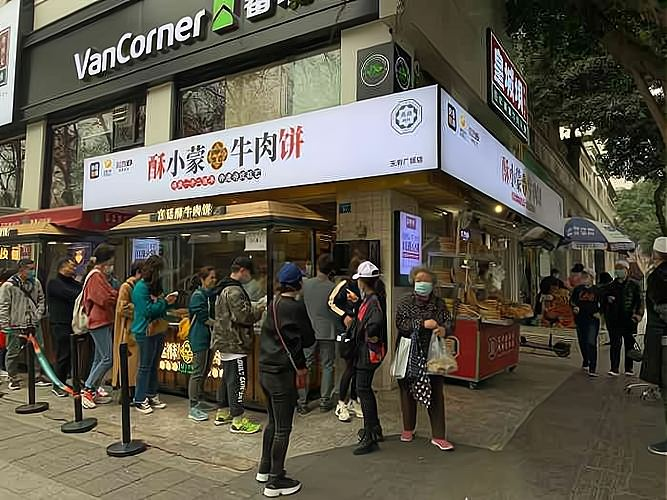

| 指标 | 牦牛肉 | 黄牛肉 | 对比结论 |
|---|---|---|---|
| 蛋白质 | 22.5g/100g | 16–20g | 含量高 37% |
| 脂肪 | 1–5g/100g | 5–20g | 仅为普通牛肉 1/3–1/5 |
| Omega-3 | ≈120mg/100g | ≈40mg | 为普通牛肉 3 倍 |
| 铁 / 锌 | 4.0 / 4.28mg | 2.5–3.0 / 3.0–3.5 | 高 30%–60% / 22%–43% |
| 胆固醇 | 58mg/100g | 70–90mg | 含量更低、更健康 |
| 氨基酸 | 85.75g/100g | 低于牦牛水平 | 覆盖人体必需氨基酸 |

① 文化约束
清真「不售死牛、病牛」千年准则与屠宰伦理，辐射全球超 30 亿人群饮食结构
② 地理防疫
地广人稀、牛群密度低，疫病风险天然降低，从源头减少用药需求
③ 生态政策
毗邻九寨沟国家级自然保护区，饲草符合绿色养殖标准

联合高校与科农局搭建松潘牦牛专属信息数据库，以区块链记录品种、月龄、牧养区域等养殖 / 屠宰 / 仓储 / 流通全环节信息，检测数据与养殖信息实时绑定——养殖源头到终端餐桌全程可查、来源可溯。
社员代表大会
一股一票 · 重大事项表决
理事会
牧民代表 + 产业专业人才
独立监事会
全程监督 · 信息公开
牧民：「被收购者」→「产业股东」
共享加工 / 文旅 / 品牌溢价全链收益
企业：「产业链主导者」→「服务赋能者」
提供品牌 / 技术 / 渠道，支持合作社运营

抖音 / 小红书 / 今日头条等多平台矩阵联动，以松潘牦牛为主题打造爆款微纪录片与场景化种草内容，精准触达健康饮食、地方特产消费群体，高效完成品牌曝光与用户教育。
小程序商城 + 会员社群沉淀用户，联动美团 / 抖音团购与线下门店，打通线上种草与线下核销，形成可持续的用户运营体系。
冷鲜全部位
牛霖/上脑/西冷/牛腩…标营养与溯源信息，热门部位单品累计销量 3000+ 件
多场景礼盒
雪域盛宴/家庭聚会/滋补调养/节日限定，融藏族纹样与阿吉元素
健康即食
低温低盐牛肉干、卤制腱子肉、手撕牦牛肉

人群定向：成渝 25–45 岁品质家庭 / 文化体验消费者 / 新生代健康群体；结合藏历新年等消费旺季节点集中投放；多条内容进入平台三农 / 乡村振兴流量池。

针对餐饮「门槛低、同质化、平台抽成高」痛点，为每家餐厅免费定制一款独家牦牛招牌菜：专业团队包办 2–6 个月推广运营、核心食材直供、厨师团队研发引流菜。收益共享 零前置费用，按菜品销售额阶梯分成：月流水<5万 抽 1% ｜ 5–10万 抽 2% ｜ >10万 可协商至约 7%。
面向餐饮供应链从业者、美食博主、社区团长、餐饮培训师：牵线奖 300 元/店 + 签约奖 500 元/店 + 长期流水抽成。典型案例：招募官雍某单月合计 9,495 元（牵线奖 1,200 元 + 流水分成 8,295 元）。
与本土青年乐队合作主题商演累计 20 余场，直接触达 1000+ 人次，互动量超 1 万次，持续为线下触点引流造势。

* 直签口径：截至报告期已签约 6 家餐厅（运营持续扩展中）；招募官案例来自项目运营台账。